day03
课程说明¶
- 首页功能说明
- 系统架构说明
- 实现今日佳人功能
- 实现推荐用户的列表
- 接口增加缓存功能
- 整合前端联调测试
1、首页¶
在用户登录成功后，就会进入首页，首页中有今日佳人、推荐好友、探花、搜附近等功能。

2、系统架构¶
在开发完SSO系统中的登录功能后，接下来就需要实现其他的功能，在整体架构中，完成与APP对接的服务工程叫my-tanhua-server，真正的核心业务逻辑使用dubbo完成，其工程名叫：my-tanhua-dubbo，它们的架构示意图如下：

说明：
- 客户端APP发起请求到Nginx，在Nginx中对请求做出判断，将请求转发至sso系统或server系统。
- sso系统中，将对接第三方平台以及完成数据的缓存、消息发送、用户的注册登录功能。
- server系统为APP提供了接口服务的支撑
- 用户请求中携带的token需要到sso系统中进行校验
- 通过rpc调用dubbo中提供的服务，在dubbo服务中与MongoDB对接，完成数据的CRUD操作
- 将一些数据缓存到Redis，从而提升数据查询性能
- 用户数据的查询将基于MySQL数据库进行查询
2.1、nginx服务¶
2.1.1、部署安装¶
安装包在资料中：nginx-1.17.3.zip
安装在任意目录，通过命令：start nginx.exe 启动：

重启加载配置文件命令：nginx.exe -s reload

2.1.2、配置¶
修改conf目录下的nginx.conf文件：
#user nobody;
worker_processes 1;
#error_log logs/error.log;
#error_log logs/error.log notice;
#error_log logs/error.log info;
#pid logs/nginx.pid;
events {
worker_connections 1024;
}
http {
include mime.types;
default_type application/octet-stream;
#log_format main '$remote_addr - $remote_user [$time_local] "$request" '
# '$status $body_bytes_sent "$http_referer" '
# '"$http_user_agent" "$http_x_forwarded_for"';
#access_log logs/access.log main;
sendfile on;
#tcp_nopush on;
#keepalive_timeout 0;
keepalive_timeout 65;
#gzip on;
server {
listen 80;
server_name localhost;
#charset koi8-r;
#access_log logs/host.access.log main;
#error_page 404 /404.html;
# redirect server error pages to the static page /50x.html
#
error_page 500 502 503 504 /50x.html;
location = /50x.html {
root html;
}
location /user/ { #请求路径中凡是以/user/开头的请求，转发到sso系统
client_max_body_size 300m; #设置最大的请求体大小，解决大文件上传不了的问题
proxy_connect_timeout 300s; #代理连接超时时间
proxy_send_timeout 300s; #代理发送数据的超时时间
proxy_read_timeout 300s; #代理读取数据的超时时间
proxy_pass http://127.0.0.1:18080; #转发请求
}
location / { #上面未匹配到的在这里处理
client_max_body_size 300m;
proxy_connect_timeout 300s;
proxy_send_timeout 300s;
proxy_read_timeout 300s;
proxy_pass http://127.0.0.1:18081; #转发请求到server系统
}
}
}
2.1.3、测试¶
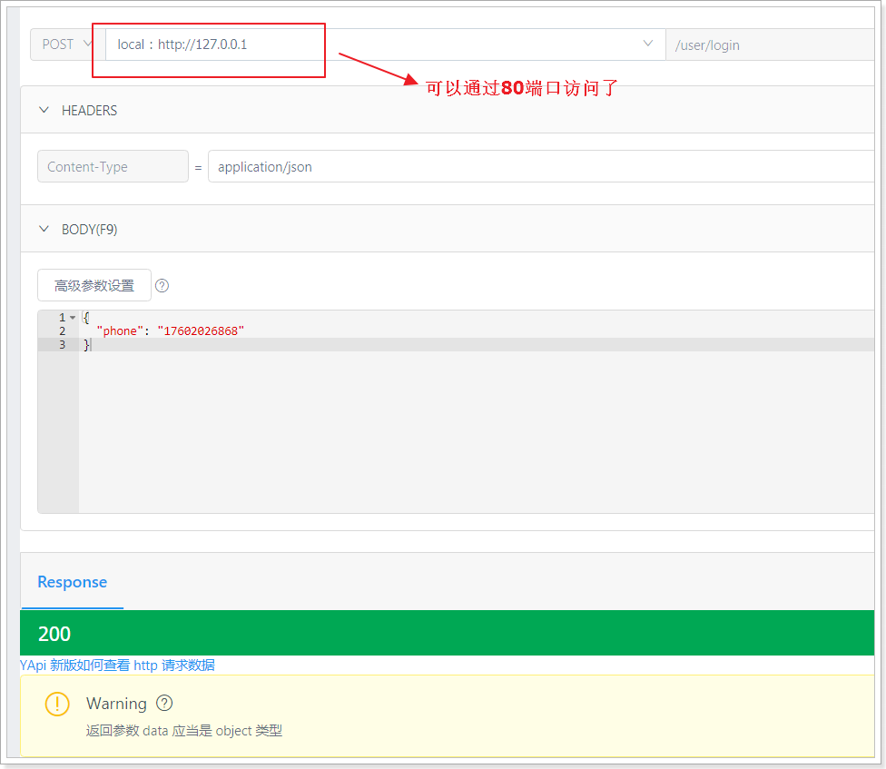
2.2、搭建server工程¶
2.2.1、导入依赖¶
pom.xml文件：
<?xml version="1.0" encoding="UTF-8"?>
<project xmlns="http://maven.apache.org/POM/4.0.0"
xmlns:xsi="http://www.w3.org/2001/XMLSchema-instance"
xsi:schemaLocation="http://maven.apache.org/POM/4.0.0 http://maven.apache.org/xsd/maven-4.0.0.xsd">
<parent>
<artifactId>my-tanhua</artifactId>
<groupId>cn.itcast.tanhua</groupId>
<version>1.0-SNAPSHOT</version>
</parent>
<modelVersion>4.0.0</modelVersion>
<artifactId>my-tanhua-server</artifactId>
<dependencies>
<dependency>
<groupId>cn.itcast.tanhua</groupId>
<artifactId>my-tanhua-dubbo-interface</artifactId>
<version>1.0-SNAPSHOT</version>
</dependency>
<dependency>
<groupId>org.springframework.boot</groupId>
<artifactId>spring-boot-starter-web</artifactId>
</dependency>
<dependency>
<groupId>org.springframework.boot</groupId>
<artifactId>spring-boot-starter-test</artifactId>
<scope>test</scope>
</dependency>
<dependency>
<groupId>org.springframework.boot</groupId>
<artifactId>spring-boot-starter-data-redis</artifactId>
</dependency>
<!--dubbo的springboot支持-->
<dependency>
<groupId>com.alibaba.boot</groupId>
<artifactId>dubbo-spring-boot-starter</artifactId>
</dependency>
<!--dubbo框架-->
<dependency>
<groupId>com.alibaba</groupId>
<artifactId>dubbo</artifactId>
</dependency>
<!--zk依赖-->
<dependency>
<groupId>org.apache.zookeeper</groupId>
<artifactId>zookeeper</artifactId>
</dependency>
<dependency>
<groupId>com.github.sgroschupf</groupId>
<artifactId>zkclient</artifactId>
</dependency>
<dependency>
<groupId>org.apache.commons</groupId>
<artifactId>commons-lang3</artifactId>
</dependency>
<dependency>
<groupId>org.apache.commons</groupId>
<artifactId>commons-collections4</artifactId>
<version>4.4</version>
</dependency>
<dependency>
<groupId>com.baomidou</groupId>
<artifactId>mybatis-plus</artifactId>
</dependency>
<dependency>
<groupId>com.baomidou</groupId>
<artifactId>mybatis-plus-boot-starter</artifactId>
</dependency>
<dependency>
<groupId>mysql</groupId>
<artifactId>mysql-connector-java</artifactId>
</dependency>
<dependency>
<groupId>commons-io</groupId>
<artifactId>commons-io</artifactId>
<version>2.6</version>
</dependency>
<dependency>
<groupId>commons-codec</groupId>
<artifactId>commons-codec</artifactId>
</dependency>
</dependencies>
</project>
2.2.2、application.properties¶
spring.application.name = itcast-tanhua-server
server.port = 18081
#数据库连接信息
spring.datasource.driver-class-name=com.mysql.jdbc.Driver
spring.datasource.url=jdbc:mysql://192.168.31.81:3306/mytanhua?useUnicode=true&characterEncoding=utf8&autoReconnect=true&allowMultiQueries=true&useSSL=false
spring.datasource.username=root
spring.datasource.password=root
# 枚举包扫描
mybatis-plus.type-enums-package=com.tanhua.server.enums
# 表名前缀
mybatis-plus.global-config.db-config.table-prefix=tb_
# id策略为自增长
mybatis-plus.global-config.db-config.id-type=auto
#dubbo注册中心配置
dubbo.application.name = itcast-tanhua-server
dubbo.registry.address = zookeeper://192.168.31.81:2181
dubbo.registry.client = zkclient
dubbo.registry.timeout = 60000
dubbo.consumer.timeout = 60000
#sso系统服务地址
tanhua.sso.url=http://127.0.0.1
#默认今日佳人推荐用户
tanhua.sso.default.user=2
2.2.3、ServerApplication¶
package com.tanhua.server;
import org.mybatis.spring.annotation.MapperScan;
import org.springframework.boot.SpringApplication;
import org.springframework.boot.autoconfigure.SpringBootApplication;
@MapperScan("com.tanhua.server.mapper") //设置mapper接口的扫描包
@SpringBootApplication
public class ServerApplication {
public static void main(String[] args) {
SpringApplication.run(ServerApplication.class, args);
}
}
2.3、搭建dubbo工程¶
my-tanhua-dubbo是dubbo工程的父工程：
~~~xml
<artifactId>my-tanhua-dubbo</artifactId>
<packaging>pom</packaging>
<modules>
<module>my-tanhua-dubbo-interface</module>
<module>my-tanhua-dubbo-service</module>
</modules>
~~~
2.3.1、创建my-tanhua-dubbo-interface工程¶
该工程中定义了dubbo服务中的interface与实体对象。
<?xml version="1.0" encoding="UTF-8"?>
<project xmlns="http://maven.apache.org/POM/4.0.0"
xmlns:xsi="http://www.w3.org/2001/XMLSchema-instance"
xsi:schemaLocation="http://maven.apache.org/POM/4.0.0 http://maven.apache.org/xsd/maven-4.0.0.xsd">
<parent>
<artifactId>my-tanhua-dubbo</artifactId>
<groupId>cn.itcast.tanhua</groupId>
<version>1.0-SNAPSHOT</version>
</parent>
<modelVersion>4.0.0</modelVersion>
<artifactId>my-tanhua-dubbo-interface</artifactId>
<dependencies>
<dependency>
<groupId>org.projectlombok</groupId>
<artifactId>lombok</artifactId>
</dependency>
<dependency>
<groupId>org.springframework.boot</groupId>
<artifactId>spring-boot-starter-data-mongodb</artifactId>
</dependency>
</dependencies>
</project>
2.3.2、创建my-tanhua-dubbo-service工程¶
<?xml version="1.0" encoding="UTF-8"?>
<project xmlns="http://maven.apache.org/POM/4.0.0"
xmlns:xsi="http://www.w3.org/2001/XMLSchema-instance"
xsi:schemaLocation="http://maven.apache.org/POM/4.0.0 http://maven.apache.org/xsd/maven-4.0.0.xsd">
<parent>
<artifactId>my-tanhua-dubbo</artifactId>
<groupId>cn.itcast.tanhua</groupId>
<version>1.0-SNAPSHOT</version>
</parent>
<modelVersion>4.0.0</modelVersion>
<artifactId>my-tanhua-dubbo-service</artifactId>
<dependencies>
<!--引入interface依赖-->
<dependency>
<groupId>cn.itcast.tanhua</groupId>
<artifactId>my-tanhua-dubbo-interface</artifactId>
<version>1.0-SNAPSHOT</version>
</dependency>
<dependency>
<groupId>org.springframework.boot</groupId>
<artifactId>spring-boot-starter</artifactId>
</dependency>
<dependency>
<groupId>org.springframework.boot</groupId>
<artifactId>spring-boot-starter-test</artifactId>
<scope>test</scope>
</dependency>
<!--dubbo的springboot支持-->
<dependency>
<groupId>com.alibaba.boot</groupId>
<artifactId>dubbo-spring-boot-starter</artifactId>
</dependency>
<!--dubbo框架-->
<dependency>
<groupId>com.alibaba</groupId>
<artifactId>dubbo</artifactId>
</dependency>
<!--zk依赖-->
<dependency>
<groupId>org.apache.zookeeper</groupId>
<artifactId>zookeeper</artifactId>
</dependency>
<dependency>
<groupId>com.github.sgroschupf</groupId>
<artifactId>zkclient</artifactId>
</dependency>
<!--MongoDB相关依赖-->
<dependency>
<groupId>org.springframework.boot</groupId>
<artifactId>spring-boot-starter-data-mongodb</artifactId>
</dependency>
<dependency>
<groupId>org.mongodb</groupId>
<artifactId>mongodb-driver-sync</artifactId>
</dependency>
<!--其他工具包依赖-->
<dependency>
<groupId>org.apache.commons</groupId>
<artifactId>commons-lang3</artifactId>
</dependency>
<dependency>
<groupId>joda-time</groupId>
<artifactId>joda-time</artifactId>
</dependency>
<dependency>
<groupId>io.netty</groupId>
<artifactId>netty-all</artifactId>
</dependency>
</dependencies>
</project>
application.properties：
# Spring boot application
spring.application.name = itcast-tanhua-dubbo-service
# dubbo 扫描包配置
dubbo.scan.basePackages = com.tanhua.dubbo.server
dubbo.application.name = dubbo-provider-tanhua
#dubbo 对外暴露的端口信息
dubbo.protocol.name = dubbo
dubbo.protocol.port = 20880
#dubbo注册中心的配置
dubbo.registry.address = zookeeper://192.168.31.81:2181
dubbo.registry.client = zkclient
dubbo.registry.timeout = 60000
#springboot MongoDB配置
spring.data.mongodb.username=tanhua
spring.data.mongodb.password=l3SCjl0HvmSkTtiSbN0Swv40spYnHhDV
spring.data.mongodb.authentication-database=admin
spring.data.mongodb.database=tanhua
spring.data.mongodb.port=27017
spring.data.mongodb.host=192.168.31.81
编写启动类：
package com.tanhua.dubbo.server;
import org.springframework.boot.SpringApplication;
import org.springframework.boot.autoconfigure.SpringBootApplication;
@SpringBootApplication
public class DubboApplication {
public static void main(String[] args) {
SpringApplication.run(DubboApplication.class, args);
}
}
2.4、工程结构¶
最终搭建完成的效果如下：

3、今日佳人¶
今日佳人，会推荐缘分值最大的用户，进行展现出来。缘分值的计算是由用户的行为进行打分，如：点击、点赞、评论、学历、婚姻状态等信息组合而成的。
实现：我们先不考虑推荐的逻辑，假设现在已经有推荐的结果，我们只需要从结果中查询到缘分值最高的用户就可以了。至于推荐的逻辑以及实现，我们将后面的课程中讲解。
流程：
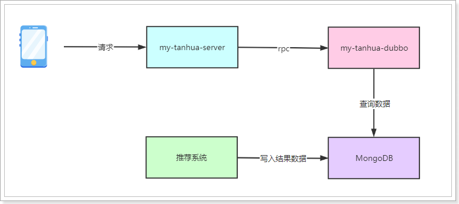
3.1、表结构¶
#表结构，表名：recommend_user
{
"userId":1001, #推荐的用户id
"toUserId":1002, #用户id
"score":90, #推荐得分
"date":"2019/1/1" #日期
}
已经提供的测试数据（4855条数据）：
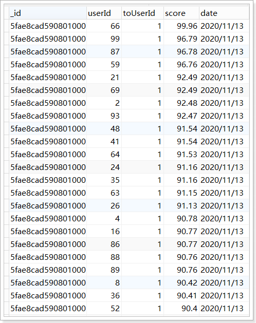
3.2、编写dubbo服务¶
3.2.1、编写接口¶
在my-tanhua-dubbo-interface工程中定义接口：
package com.tanhua.dubbo.server.api;
import com.tanhua.dubbo.server.vo.PageInfo;
import com.tanhua.dubbo.server.pojo.RecommendUser;
public interface RecommendUserApi {
/**
* 查询一位得分最高的推荐用户
*
* @param userId
* @return
*/
RecommendUser queryWithMaxScore(Long userId);
/**
* 按照得分倒序
*
* @param userId
* @param pageNum
* @param pageSize
* @return
*/
PageInfo<RecommendUser> queryPageInfo(Long userId, Integer pageNum, Integer pageSize);
}
package com.tanhua.dubbo.server.pojo;
import lombok.AllArgsConstructor;
import lombok.Data;
import lombok.NoArgsConstructor;
import org.bson.types.ObjectId;
import org.springframework.data.annotation.Id;
import org.springframework.data.mongodb.core.index.Indexed;
import org.springframework.data.mongodb.core.mapping.Document;
@Data
@NoArgsConstructor
@AllArgsConstructor
@Document(collection = "recommend_user")
public class RecommendUser implements java.io.Serializable{
private static final long serialVersionUID = -4296017160071130962L;
@Id
private ObjectId id; //主键id
@Indexed
private Long userId; //推荐的用户id
private Long toUserId; //用户id
@Indexed
private Double score; //推荐得分
private String date; //日期
}
package com.tanhua.dubbo.server.vo;
import lombok.AllArgsConstructor;
import lombok.Data;
import java.util.Collections;
import java.util.List;
@Data
@AllArgsConstructor
public class PageInfo<T> implements java.io.Serializable {
private static final long serialVersionUID = -2105385689859184204L;
/**
* 总条数
*/
private Integer total = 0;
/**
* 当前页
*/
private Integer pageNum = 0;
/**
* 一页显示的大小
*/
private Integer pageSize = 0;
/**
* 数据列表
*/
private List<T> records = Collections.emptyList();
}
3.2.2、编写实现¶
package com.tanhua.dubbo.server.api;
import com.alibaba.dubbo.config.annotation.Service;
import com.tanhua.dubbo.server.pojo.RecommendUser;
import com.tanhua.dubbo.server.vo.PageInfo;
import org.springframework.beans.factory.annotation.Autowired;
import org.springframework.data.domain.PageRequest;
import org.springframework.data.domain.Sort;
import org.springframework.data.mongodb.core.MongoTemplate;
import org.springframework.data.mongodb.core.query.Criteria;
import org.springframework.data.mongodb.core.query.Query;
import java.util.List;
@Service(version = "1.0.0") //申明这是一个dubbo服务
public class RecommendUserApiImpl implements RecommendUserApi {
@Autowired
private MongoTemplate mongoTemplate;
@Override
public RecommendUser queryWithMaxScore(Long userId) {
//查询得分最高的用户，按照得分倒序排序
Query query = Query.query(Criteria.where("toUserId").is(userId))
.with(Sort.by(Sort.Order.desc("score"))).limit(1);
return this.mongoTemplate.findOne(query, RecommendUser.class);
}
@Override
public PageInfo<RecommendUser> queryPageInfo(Long userId, Integer pageNum, Integer pageSize) {
//分页并且排序参数
PageRequest pageRequest = PageRequest.of(pageNum - 1, pageSize, Sort.by(Sort.Order.desc("score")));
//查询参数
Query query = Query.query(Criteria.where("toUserId").is(userId)).with(pageRequest);
List<RecommendUser> recommendUserList = this.mongoTemplate.find(query, RecommendUser.class);
//暂时不提供数据总数
return new PageInfo<>(0, pageNum, pageSize, recommendUserList);
}
}
3.2.3、测试¶
package com.tanhua.dubbo.server.api;
import org.junit.Test;
import org.junit.runner.RunWith;
import org.springframework.beans.factory.annotation.Autowired;
import org.springframework.boot.test.context.SpringBootTest;
import org.springframework.test.context.junit4.SpringRunner;
@RunWith(SpringRunner.class)
@SpringBootTest
public class TestRecommendUserApi {
@Autowired
private RecommendUserApi recommendUserApi;
@Test
public void testQueryWithMaxScore(){
System.out.println(this.recommendUserApi.queryWithMaxScore(1L));
System.out.println(this.recommendUserApi.queryWithMaxScore(8L));
System.out.println(this.recommendUserApi.queryWithMaxScore(26L));
}
@Test
public void testQueryPageInfo(){
System.out.println(this.recommendUserApi.queryPageInfo(1L,1,5));
System.out.println(this.recommendUserApi.queryPageInfo(1L,2,5));
System.out.println(this.recommendUserApi.queryPageInfo(1L,3,5));
}
}
3.3、实现今日佳人服务¶
3.3.1、mock服务¶
地址：https://mock-java.itheima.net/project/35/interface/api/617
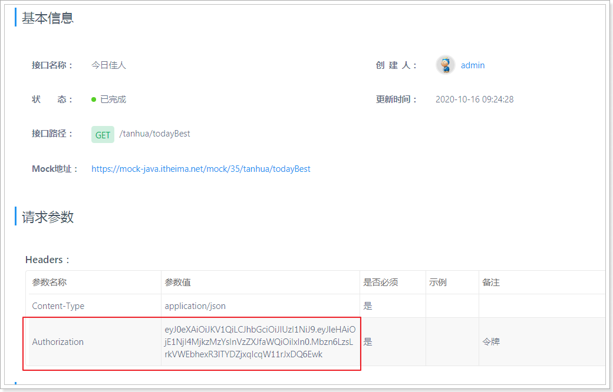
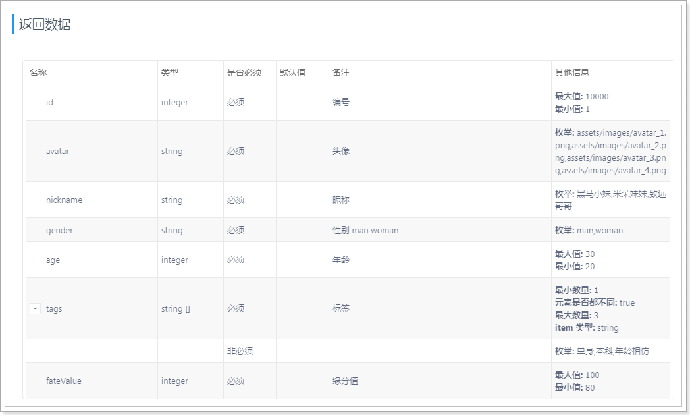
3.3.2、基础代码¶
3.3.2.1、SexEnum¶
package com.tanhua.server.enums;
import com.baomidou.mybatisplus.core.enums.IEnum;
public enum SexEnum implements IEnum<Integer> {
MAN(1,"男"),
WOMAN(2,"女"),
UNKNOWN(3,"未知");
private int value;
private String desc;
SexEnum(int value, String desc) {
this.value = value;
this.desc = desc;
}
@Override
public Integer getValue() {
return this.value;
}
@Override
public String toString() {
return this.desc;
}
}
3.3.2.2、BasePojo¶
package com.tanhua.server.pojo;
import com.baomidou.mybatisplus.annotation.FieldFill;
import com.baomidou.mybatisplus.annotation.TableField;
import java.util.Date;
public abstract class BasePojo {
@TableField(fill = FieldFill.INSERT)
private Date created;
@TableField(fill = FieldFill.INSERT_UPDATE)
private Date updated;
}
3.3.2.3、User¶
package com.tanhua.server.pojo;
import com.fasterxml.jackson.annotation.JsonIgnore;
import com.fasterxml.jackson.annotation.JsonIgnoreProperties;
import lombok.AllArgsConstructor;
import lombok.Data;
import lombok.NoArgsConstructor;
@Data
@NoArgsConstructor
@AllArgsConstructor
@JsonIgnoreProperties(ignoreUnknown = true)
public class User extends BasePojo {
private Long id;
private String mobile; //手机号
@JsonIgnore
private String password; //密码，json序列化时忽略
}
3.3.2.4、UserInfo¶
package com.tanhua.server.pojo;
import com.tanhua.server.enums.SexEnum;
import lombok.AllArgsConstructor;
import lombok.Data;
import lombok.NoArgsConstructor;
@Data
@NoArgsConstructor
@AllArgsConstructor
public class UserInfo extends BasePojo {
private Long id;
private Long userId; //用户id
private String nickName; //昵称
private String logo; //用户头像
private String tags; //用户标签：多个用逗号分隔
private SexEnum sex; //性别
private Integer age; //年龄
private String edu; //学历
private String city; //城市
private String birthday; //生日
private String coverPic; // 封面图片
private String industry; //行业
private String income; //收入
private String marriage; //婚姻状态
}
3.3.3、实现功能¶
实现描述：
- 需要根据前端定义的结构定义java对象
- 根据sso系统提供的接口查询当前登录用户的信息
- 根据dubbo系统提供的服务进行查询今日佳人数据
3.3.3.1、TodayBest¶
package com.tanhua.server.vo;
import lombok.AllArgsConstructor;
import lombok.Data;
import lombok.NoArgsConstructor;
/**
* 今日佳人
*/
@Data
@NoArgsConstructor
@AllArgsConstructor
public class TodayBest {
private Long id;
private String avatar;
private String nickname;
private String gender; //性别 man woman
private Integer age;
private String[] tags;
private Long fateValue; //缘分值
}
3.3.3.2、TodayBestController¶
package com.tanhua.server.controller;
import com.tanhua.server.service.TodayBestService;
import com.tanhua.server.vo.TodayBest;
import lombok.extern.slf4j.Slf4j;
import org.springframework.beans.factory.annotation.Autowired;
import org.springframework.http.HttpStatus;
import org.springframework.http.ResponseEntity;
import org.springframework.web.bind.annotation.GetMapping;
import org.springframework.web.bind.annotation.RequestHeader;
import org.springframework.web.bind.annotation.RequestMapping;
import org.springframework.web.bind.annotation.RestController;
@RestController
@RequestMapping("tanhua")
@Slf4j
public class TodayBestController {
@Autowired
private TodayBestService todayBestService;
/**
* 查询今日佳人
*
* @param token
* @return
*/
@GetMapping("todayBest")
public ResponseEntity<TodayBest> queryTodayBest(@RequestHeader("Authorization") String token) {
try {
TodayBest todayBest = this.todayBestService.queryTodayBest(token);
if (null != todayBest) {
return ResponseEntity.ok(todayBest);
}
} catch (Exception e) {
log.error("查询今日佳人出错~ token = " + token, e);
}
return ResponseEntity.status(HttpStatus.INTERNAL_SERVER_ERROR).body(null);
}
}
3.3.3.3、TodayBestService¶
package com.tanhua.server.service;
import com.tanhua.server.pojo.User;
import com.tanhua.server.pojo.UserInfo;
import com.tanhua.server.vo.TodayBest;
import org.apache.commons.lang3.StringUtils;
import org.springframework.beans.factory.annotation.Autowired;
import org.springframework.beans.factory.annotation.Value;
import org.springframework.stereotype.Service;
@Service
public class TodayBestService {
@Autowired
private UserService userService;
@Autowired
private RecommendUserService recommendUserService;
@Autowired
private UserInfoService userInfoService;
@Value("${tanhua.sso.default.user}")
private Long defaultUser;
public TodayBest queryTodayBest(String token) {
//校验token是否有效，通过SSO的接口进行校验
User user = this.userService.queryUserByToken(token);
if (null == user) {
//token非法或已经过期
return null;
}
//查询推荐用户（今日佳人）
TodayBest todayBest = this.recommendUserService.queryTodayBest(user.getId());
if(null == todayBest){
//给出默认的推荐用户
todayBest = new TodayBest();
todayBest.setId(defaultUser);
todayBest.setFateValue(80L); //固定值
}
//补全个人信息
UserInfo userInfo = this.userInfoService.queryUserInfoByUserId(todayBest.getId());
if(null == userInfo){
return null;
}
todayBest.setAvatar(userInfo.getLogo());
todayBest.setNickname(userInfo.getNickName());
todayBest.setTags(StringUtils.split(userInfo.getTags(), ','));
todayBest.setGender(userInfo.getSex().getValue() == 1 ? "man" : "woman");
todayBest.setAge(userInfo.getAge());
return todayBest;
}
}
3.3.3.4、UserService¶
package com.tanhua.server.service;
import com.fasterxml.jackson.databind.ObjectMapper;
import com.tanhua.server.pojo.User;
import lombok.extern.slf4j.Slf4j;
import org.apache.commons.lang3.StringUtils;
import org.springframework.beans.factory.annotation.Autowired;
import org.springframework.beans.factory.annotation.Value;
import org.springframework.stereotype.Service;
import org.springframework.web.client.RestTemplate;
@Service
@Slf4j
public class UserService {
@Autowired
private RestTemplate restTemplate;
@Value("${tanhua.sso.url}")
private String ssoUrl;
private static final ObjectMapper MAPPER = new ObjectMapper();
/**
* 通过sso的rest接口查询
*
* @param token
* @return
*/
public User queryUserByToken(String token) {
String url = ssoUrl + "/user/" + token;
try {
String data = this.restTemplate.getForObject(url, String.class);
if (StringUtils.isEmpty(data)) {
return null;
}
return MAPPER.readValue(data, User.class);
} catch (Exception e) {
log.error("校验token出错，token = " + token, e);
}
return null;
}
}
package com.tanhua.server.config;
import org.springframework.context.annotation.Bean;
import org.springframework.context.annotation.Configuration;
import org.springframework.http.client.ClientHttpRequestFactory;
import org.springframework.http.client.SimpleClientHttpRequestFactory;
import org.springframework.http.converter.StringHttpMessageConverter;
import org.springframework.web.client.RestTemplate;
import java.nio.charset.Charset;
@Configuration
public class RestTemplateConfig {
@Bean
public RestTemplate restTemplate(ClientHttpRequestFactory factory) {
RestTemplate restTemplate = new RestTemplate(factory);
// 支持中文编码
restTemplate.getMessageConverters().set(1, new StringHttpMessageConverter(Charset.forName("UTF-8")));
return restTemplate;
}
@Bean
public ClientHttpRequestFactory simpleClientHttpRequestFactory() {
SimpleClientHttpRequestFactory factory = new SimpleClientHttpRequestFactory();
factory.setReadTimeout(5000);//单位为ms
factory.setConnectTimeout(5000);//单位为ms
return factory;
}
}
3.3.3.5、RecommendUserService¶
package com.tanhua.server.service;
import com.alibaba.dubbo.config.annotation.Reference;
import com.tanhua.dubbo.server.api.RecommendUserApi;
import com.tanhua.dubbo.server.pojo.RecommendUser;
import com.tanhua.server.vo.TodayBest;
import org.springframework.stereotype.Service;
/**
* 负责与dubbo服务进行交互
*/
@Service
public class RecommendUserService {
@Reference(version = "1.0.0")
private RecommendUserApi recommendUserApi;
public TodayBest queryTodayBest(Long userId) {
RecommendUser recommendUser = this.recommendUserApi.queryWithMaxScore(userId);
if(null == recommendUser){
return null;
}
TodayBest todayBest = new TodayBest();
todayBest.setId(recommendUser.getUserId());
//缘分值
double score = Math.floor(recommendUser.getScore());//取整,98.2 -> 98
todayBest.setFateValue(Double.valueOf(score).longValue());
return todayBest;
}
}
3.3.3.6、UserInfoService¶
package com.tanhua.server.service;
import com.baomidou.mybatisplus.core.conditions.query.QueryWrapper;
import com.tanhua.server.mapper.UserInfoMapper;
import com.tanhua.server.pojo.UserInfo;
import org.springframework.beans.factory.annotation.Autowired;
import org.springframework.stereotype.Service;
@Service
public class UserInfoService {
@Autowired
private UserInfoMapper userInfoMapper;
public UserInfo queryUserInfoByUserId(Long userId) {
QueryWrapper<UserInfo> queryWrapper = new QueryWrapper<>();
queryWrapper.eq("user_id", userId);
return this.userInfoMapper.selectOne(queryWrapper);
}
}
3.3.3.7、UserInfoMapper¶
package com.tanhua.server.mapper;
import com.baomidou.mybatisplus.core.mapper.BaseMapper;
import com.tanhua.common.pojo.UserInfo;
public interface UserInfoMapper extends BaseMapper<UserInfo> {
}
3.3.4、测试¶
单元测试，测试dubbo服务：
package com.tanhua.server;
import com.tanhua.server.service.RecommendUserService;
import com.tanhua.server.vo.TodayBest;
import org.junit.Test;
import org.junit.runner.RunWith;
import org.springframework.beans.factory.annotation.Autowired;
import org.springframework.boot.test.context.SpringBootTest;
import org.springframework.test.context.junit4.SpringJUnit4ClassRunner;
@SpringBootTest
@RunWith(SpringJUnit4ClassRunner.class)
public class TestRecommendUserApi {
@Autowired
private RecommendUserService recommendUserService;
@Test
public void testQueryTodayBest(){
TodayBest todayBest = this.recommendUserService.queryTodayBest(1L);
System.out.println(todayBest);
}
}
整合功能测试，需要将sso、dubbo服务启动完成后进行测试。
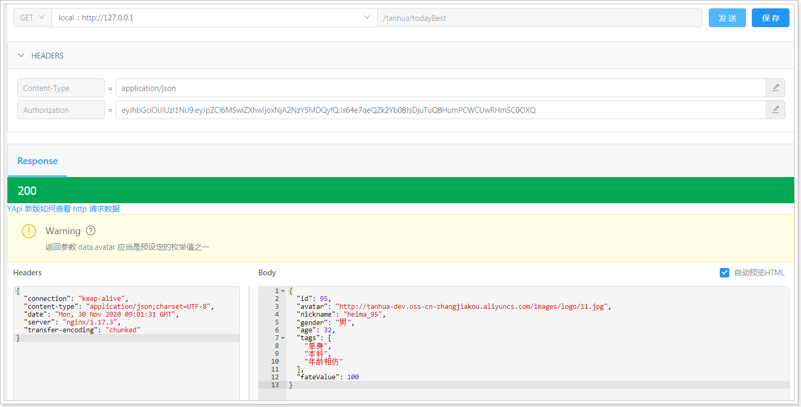
3.3.5、解决MongoDB启动bug¶
在项目中，添加了mongo的依赖的话，springboot就会自动去连接本地的mongo，由于他连接不上会导致出错。

解决：
springboot中添加排除自动配置的注解
package com.tanhua.server;
import org.mybatis.spring.annotation.MapperScan;
import org.springframework.boot.SpringApplication;
import org.springframework.boot.autoconfigure.SpringBootApplication;
import org.springframework.boot.autoconfigure.data.mongo.MongoDataAutoConfiguration;
import org.springframework.boot.autoconfigure.mongo.MongoAutoConfiguration;
@MapperScan("com.tanhua.server.mapper") //设置mapper接口的扫描包
@SpringBootApplication(exclude = {MongoAutoConfiguration.class, MongoDataAutoConfiguration.class}) //排除mongo的自动配置
public class ServerApplication {
public static void main(String[] args) {
SpringApplication.run(ServerApplication.class, args);
}
}
4、推荐列表¶
4.1、mock接口¶
地址：https://mock-java.itheima.net/project/35/interface/api/623
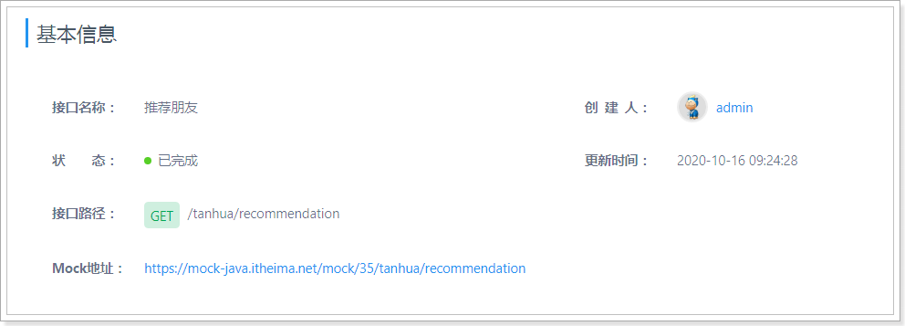
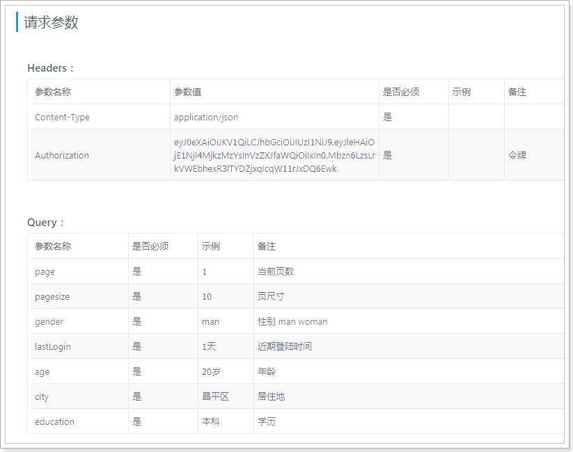
4.2、查询参数对象¶
package com.tanhua.server.vo;
import lombok.AllArgsConstructor;
import lombok.Data;
import lombok.NoArgsConstructor;
@Data
@NoArgsConstructor
@AllArgsConstructor
public class RecommendUserQueryParam {
private Integer page = 1; //当前页数
private Integer pagesize = 10; //页尺寸
private String gender; //性别 man woman
private String lastLogin; //近期登陆时间
private Integer age; //年龄
private String city; //居住地
private String education; //学历
}
4.3、结果对象¶
package com.tanhua.server.vo;
import lombok.AllArgsConstructor;
import lombok.Data;
import lombok.NoArgsConstructor;
import java.util.Collections;
import java.util.List;
@Data
@AllArgsConstructor
@NoArgsConstructor
public class PageResult {
private Integer counts = 0;//总记录数
private Integer pagesize = 0;//页大小
private Integer pages = 0;//总页数
private Integer page = 0;//当前页码
private List<?> items = Collections.emptyList(); //列表
}
4.4、Controller¶
/**
* 查询推荐用户列表
*
* @param token
* @param queryParam
* @return
*/
@GetMapping("recommendation")
public ResponseEntity<PageResult> queryRecommendation(@RequestHeader("Authorization") String token,
RecommendUserQueryParam queryParam){
try {
PageResult pageResult = this.todayBestService.queryRecommendation(token, queryParam);
if (null != pageResult) {
return ResponseEntity.ok(pageResult);
}
} catch (Exception e) {
log.error("查询推荐用户列表出错~ token = " + token, e);
}
return ResponseEntity.status(HttpStatus.INTERNAL_SERVER_ERROR).body(null);
}
4.5、Service¶
/**
* 查询推荐用户列表
*
* @param queryParam
* @param token
* @return
*/
public PageResult queryRecommendation(String token, RecommendUserQueryParam queryParam) {
//校验token是否有效，通过SSO的接口进行校验
User user = this.userService.queryUserByToken(token);
if (null == user) {
//token非法或已经过期
return null;
}
PageResult pageResult = new PageResult();
pageResult.setPage(queryParam.getPage());
pageResult.setPagesize(queryParam.getPagesize());
PageInfo<RecommendUser> pageInfo = this.recommendUserService.queryRecommendUserList(user.getId(), queryParam.getPage(), queryParam.getPagesize());
List<RecommendUser> records = pageInfo.getRecords();
if (CollectionUtils.isEmpty(records)) {
//没有查询到推荐的用户列表
return pageResult;
}
//填充个人信息
//收集推荐用户的id
Set<Long> userIds = new HashSet<>();
for (RecommendUser record : records) {
userIds.add(record.getUserId());
}
QueryWrapper<UserInfo> queryWrapper = new QueryWrapper<>();
//用户id参数
queryWrapper.in("user_id", userIds);
if (StringUtils.isNotEmpty(queryParam.getGender())) {
//需要性别参数查询
queryWrapper.eq("sex", StringUtils.equals(queryParam.getGender(), "man") ? 1 : 2);
}
if (StringUtils.isNotEmpty(queryParam.getCity())) {
//需要城市参数查询
queryWrapper.like("city", queryParam.getCity());
}
if (queryParam.getAge() != null) {
//设置年龄参数，条件：小于等于
queryWrapper.le("age", queryParam.getAge());
}
List<UserInfo> userInfoList = this.userInfoService.queryUserInfoList(queryWrapper);
if(CollectionUtils.isEmpty(userInfoList)){
//没有查询到用户的基本信息
return pageResult;
}
List<TodayBest> todayBests = new ArrayList<>();
for (UserInfo userInfo : userInfoList) {
TodayBest todayBest = new TodayBest();
todayBest.setId(userInfo.getUserId());
todayBest.setAvatar(userInfo.getLogo());
todayBest.setNickname(userInfo.getNickName());
todayBest.setTags(StringUtils.split(userInfo.getTags(), ','));
todayBest.setGender(userInfo.getSex().getValue() == 1 ? "man" : "woman");
todayBest.setAge(userInfo.getAge());
//缘分值
for (RecommendUser record : records) {
if(record.getUserId().longValue() == userInfo.getUserId().longValue()){
double score = Math.floor(record.getScore());//取整,98.2 -> 98
todayBest.setFateValue(Double.valueOf(score).longValue());
break;
}
}
todayBests.add(todayBest);
}
//按照缘分值进行倒序排序
Collections.sort(todayBests, (o1, o2) -> new Long(o2.getFateValue() - o1.getFateValue()).intValue());
pageResult.setItems(todayBests);
return pageResult;
}
//RecommendUserService
public PageInfo<RecommendUser> queryRecommendUserList(Long id, Integer page, Integer pagesize) {
return this.recommendUserApi.queryPageInfo(id, page, pagesize);
}
//UserInfoService
/**
* 查询用户信息列表
*
* @param queryWrapper
* @return
*/
public List<UserInfo> queryUserInfoList(QueryWrapper queryWrapper) {
return this.userInfoMapper.selectList(queryWrapper);
}
4.6、测试¶
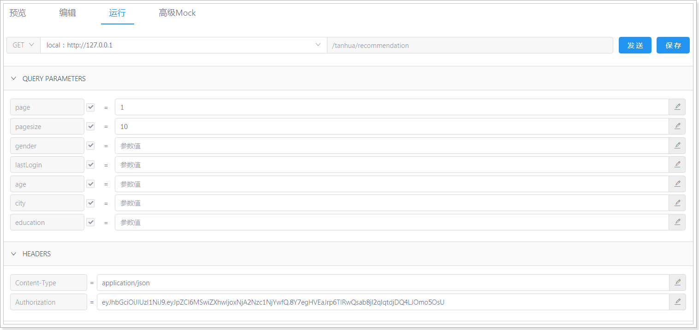
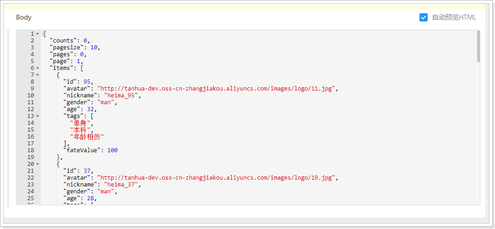
5、缓存¶
在接口服务中，有必要对于接口进行缓存处理，尤其是GET请求，如果每个接口单独添加的话会存在很多的重复的逻辑，所以可以编写一套通用的解决方案。
实现思路：
- 通过拦截器实现对请求的拦截，在拦截器中实现缓存的命中。
- 通过ResponseBodyAdvice进行对响应的拦截，可以将数据缓存到Redis中。
- 考虑到，不能对于所有的请求都一刀切，所以需要创建@Cache注解进行标记，只有标记的Controller才进行缓存处理。
- 缓存的处理中，仅针对GET请求处理，其他的请求均不做处理。
5.1、自定义注解¶
package com.tanhua.server.utils;
import java.lang.annotation.*;
/**
* 被标记为Cache的Controller进行缓存，其他情况不进行缓存
*/
@Target(ElementType.METHOD)
@Retention(RetentionPolicy.RUNTIME)
@Documented //标记注解
public @interface Cache {
/**
* 缓存时间，默认为60秒
* @return
*/
String time() default "60";
}
5.2、采用拦截器进行缓存命中¶
编写拦截器：RedisCacheInterceptor。
package com.tanhua.server.interceptor;
import com.fasterxml.jackson.databind.ObjectMapper;
import com.tanhua.server.utils.Cache;
import org.apache.commons.codec.digest.DigestUtils;
import org.apache.commons.lang3.StringUtils;
import org.springframework.beans.factory.annotation.Autowired;
import org.springframework.beans.factory.annotation.Value;
import org.springframework.data.redis.core.RedisTemplate;
import org.springframework.stereotype.Component;
import org.springframework.web.bind.annotation.GetMapping;
import org.springframework.web.method.HandlerMethod;
import org.springframework.web.servlet.HandlerInterceptor;
import javax.servlet.http.HttpServletRequest;
import javax.servlet.http.HttpServletResponse;
@Component
public class RedisCacheInterceptor implements HandlerInterceptor {
@Value("${tanhua.cache.enable}")
private Boolean enable;
@Autowired
private RedisTemplate<String, String> redisTemplate;
private static final ObjectMapper MAPPER = new ObjectMapper();
@Override
public boolean preHandle(HttpServletRequest request, HttpServletResponse response, Object handler) throws Exception {
//缓存的全局开关的校验
if (!enable) {
return true;
}
//校验handler是否是HandlerMethod
if (!(handler instanceof HandlerMethod)) {
return true;
}
//判断是否为get请求
if (!((HandlerMethod) handler).hasMethodAnnotation(GetMapping.class)) {
return true;
}
//判断是否添加了@Cache注解
if (!((HandlerMethod) handler).hasMethodAnnotation(Cache.class)) {
return true;
}
//缓存命中
String redisKey = createRedisKey(request);
String cacheData = this.redisTemplate.opsForValue().get(redisKey);
if(StringUtils.isEmpty(cacheData)){
//缓存未命中
return true;
}
// 将data数据进行响应
response.setCharacterEncoding("UTF-8");
response.setContentType("application/json; charset=utf-8");
response.getWriter().write(cacheData);
return false;
}
/**
* 生成redis中的key，规则：SERVER_CACHE_DATA_MD5(url + param + token)
*
* @param request
* @return
*/
public static String createRedisKey(HttpServletRequest request) throws Exception {
String url = request.getRequestURI();
String param = MAPPER.writeValueAsString(request.getParameterMap());
String token = request.getHeader("Authorization");
String data = url + "_" + param + "_" + token;
return "SERVER_CACHE_DATA_" + DigestUtils.md5Hex(data);
}
}
application.properties：
#是否开启数据缓存
tanhua.cache.enable=false
# Redis相关配置
spring.redis.jedis.pool.max-wait = 5000ms
spring.redis.jedis.pool.max-Idle = 100
spring.redis.jedis.pool.min-Idle = 10
spring.redis.timeout = 10s
spring.redis.cluster.nodes = 192.168.31.81:6379,192.168.31.81:6380,192.168.31.81:6381
spring.redis.cluster.max-redirects=5
注册拦截器到Spring容器：
package com.tanhua.server.config;
import com.tanhua.server.interceptor.RedisCacheInterceptor;
import org.springframework.beans.factory.annotation.Autowired;
import org.springframework.context.annotation.Configuration;
import org.springframework.web.servlet.config.annotation.InterceptorRegistry;
import org.springframework.web.servlet.config.annotation.WebMvcConfigurer;
@Configuration
public class WebConfig implements WebMvcConfigurer {
@Autowired
private RedisCacheInterceptor redisCacheInterceptor;
@Override
public void addInterceptors(InterceptorRegistry registry) {
registry.addInterceptor(this.redisCacheInterceptor).addPathPatterns("/**");
}
}
4.3、响应结果写入到缓存¶
使用ResponseBodyAdvice进行对响应结果处理，将结果写入到Redis中：
具体实现：
package com.tanhua.server.interceptor;
import com.fasterxml.jackson.databind.ObjectMapper;
import com.tanhua.server.utils.Cache;
import org.springframework.beans.factory.annotation.Autowired;
import org.springframework.beans.factory.annotation.Value;
import org.springframework.core.MethodParameter;
import org.springframework.data.redis.core.RedisTemplate;
import org.springframework.http.MediaType;
import org.springframework.http.server.ServerHttpRequest;
import org.springframework.http.server.ServerHttpResponse;
import org.springframework.http.server.ServletServerHttpRequest;
import org.springframework.web.bind.annotation.ControllerAdvice;
import org.springframework.web.bind.annotation.GetMapping;
import org.springframework.web.servlet.mvc.method.annotation.ResponseBodyAdvice;
import java.util.concurrent.TimeUnit;
@ControllerAdvice
public class MyResponseBodyAdvice implements ResponseBodyAdvice {
@Value("${tanhua.cache.enable}")
private Boolean enable;
@Autowired
private RedisTemplate<String, String> redisTemplate;
private static final ObjectMapper MAPPER = new ObjectMapper();
@Override
public boolean supports(MethodParameter returnType, Class converterType) {
// 开关处于开启状态 是get请求 包含了@Cache注解
return enable && returnType.hasMethodAnnotation(GetMapping.class)
&& returnType.hasMethodAnnotation(Cache.class);
}
@Override
public Object beforeBodyWrite(Object body, MethodParameter returnType, MediaType selectedContentType, Class selectedConverterType,
ServerHttpRequest request, ServerHttpResponse response) {
if (null == body) {
return null;
}
try {
String redisValue = null;
if (body instanceof String) {
redisValue = (String) body;
} else {
redisValue = MAPPER.writeValueAsString(body);
}
String redisKey = RedisCacheInterceptor.createRedisKey(((ServletServerHttpRequest) request).getServletRequest());
Cache cache = returnType.getMethodAnnotation(Cache.class);
//缓存的时间单位是秒
this.redisTemplate.opsForValue().set(redisKey, redisValue, Long.valueOf(cache.time()), TimeUnit.SECONDS);
} catch (Exception e) {
e.printStackTrace();
}
return body;
}
}
4.4、测试¶
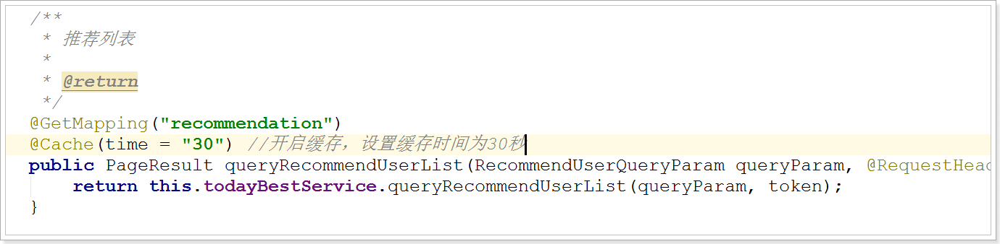
可以看到数据已经缓存到Redis中，并且其缓存时间也是30秒，与预期一致。

6、整合测试¶
测试时需要注意，由于用户数据较少，所以测试时需要把条件注释掉，否则查询不到数据：

效果：
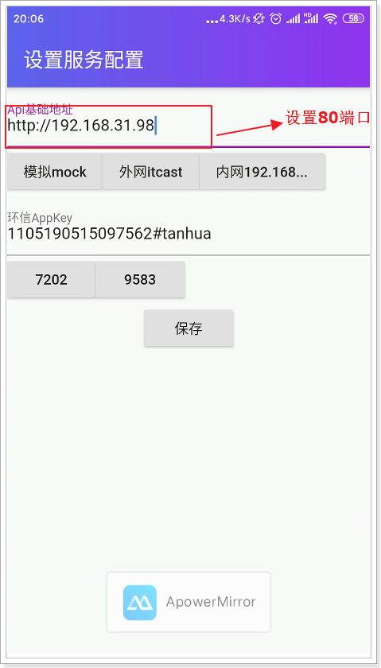